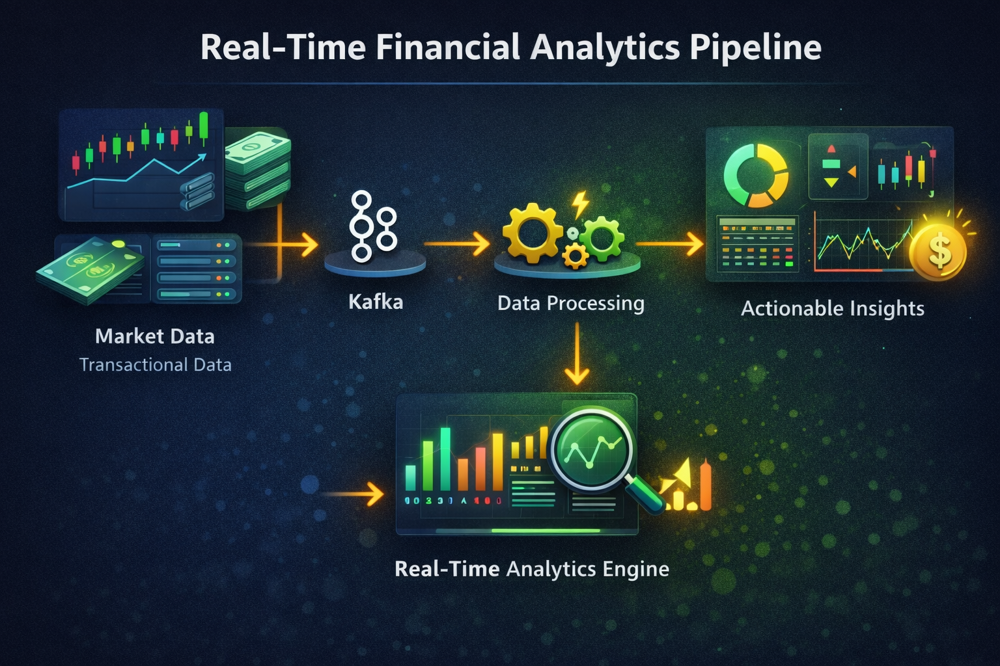
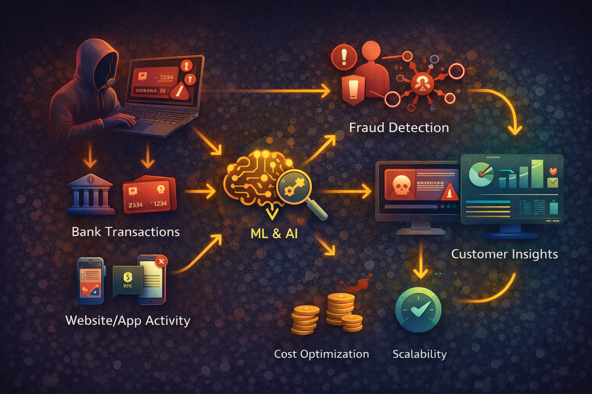
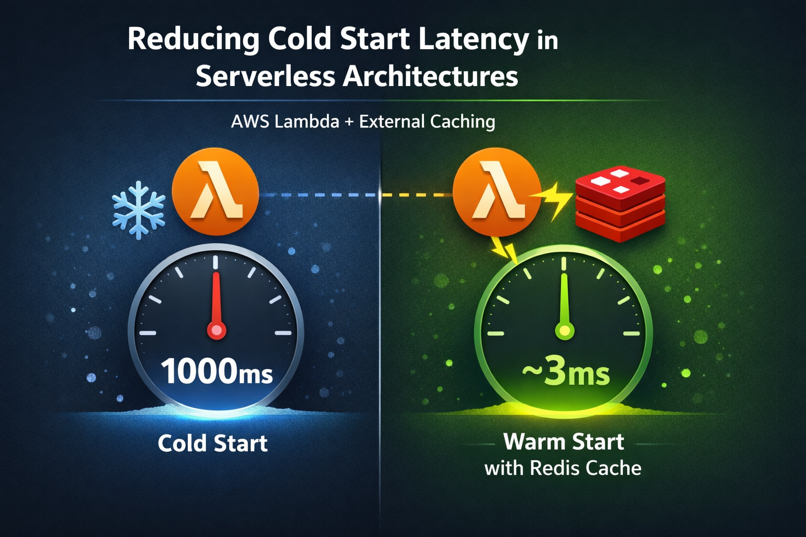
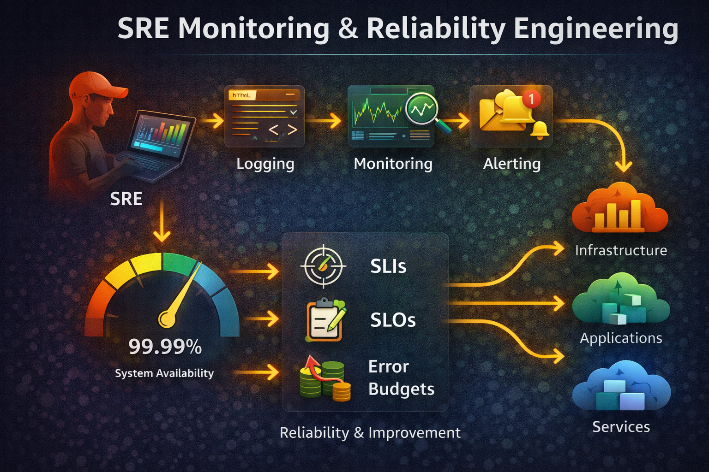
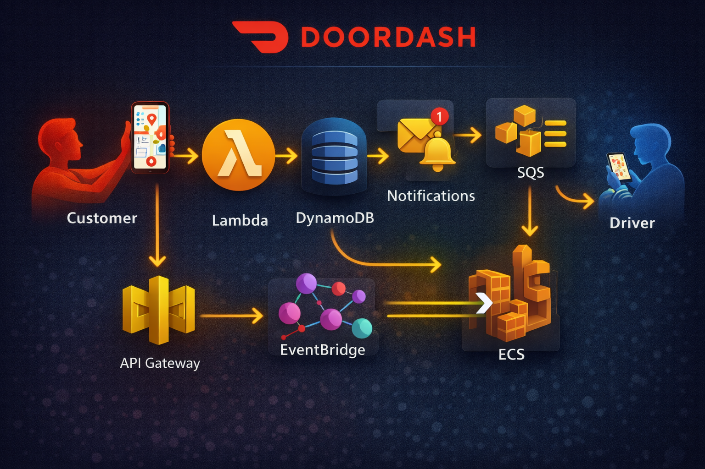

Someshkumar Srihari Hemanthkumar
Data Analyst | Business Intelligence | Cloud & Data Engineering
About Me
- Full Name:Someshkumar Srihari Hemanthkumar
- Phone:+1 361 455 5073
- Email:somesh1st@gmail.com
- Address:Austin, TX, USA
Hello There!
I'm a Data Analyst with 2+ years of professional experience translating complex business and operational data into actionable insights that drive measurable outcomes. I hold a Master's degree in Computer Science from Texas A&M University–Kingsville (GPA: 3.93) and a strong foundation in SQL, Python, and BI tools.
My work sits at the intersection of analytics, business intelligence, and data engineering. I thrive in fast-moving, cross-functional environments where I can build end-to-end analytics workflows — from data extraction and transformation to executive-ready reporting.
I'm an AWS re:Invent Grant Recipient with hands-on exposure to AI-assisted analytics and business intelligence tools used at scale.
What I've Built & Delivered:
- Data Analysis & BI Reporting: Owned analytics workflows across 3+ operational business units, writing 40+ complex SQL queries and building KPI dashboards that directly inform senior leadership decisions.
- Research & ETL Engineering: Designed Python and SQL pipelines processing 1M+ records, achieving 99%+ data accuracy and reducing report preparation time by 40%.
- Client-Facing Analytics: Delivered 20+ executive-ready presentations for QBRs, managed project scoping and timelines with 95%+ on-time delivery.
- Applied Research:
- Banking deserts analysis using QGIS and U.S. Census data
- Economic forum survey analysis and CPA exam performance trend study
What I'm Looking For:
- Data Analyst / Senior Data Analyst
- Business Intelligence Analyst / BI Engineer
- Analytics Engineer
- Data Engineer (Analytics-focused)
I excel in environments where data drives decisions and where I can collaborate with stakeholders to solve real business problems with precision and clarity.
Certifications


Recommendations
What others say about my work
Dr. Thomas M Krueger
Chair, Accounting and Finance Department at Texas A & M University
"I had the pleasure of working with Somesh in his role as a Graduate Research Assistant, where he contributed significantly to multiple data-driven projects under my supervision. The accuracy, quality, and quantity of Somesh's work were superb. His work on banking deserts using QGIS, economic forum survey analysis, and the CPA exam performance study demonstrated both technical ability and strong analytical thinking. The Economic Forum survey analysis relied upon Somesh's collection of survey responses at Harrel's, a popular restaurant in Kingsville. This location is three miles from my office, requiring a special person for this task. I found Somesh to be very dependable and hardworking. In fact, Somesh is the best intern I have had across 14 years of Economic Forums. Somesh also played a vital role in organizing the Banking and Business Career Expo. He served as the student contact, helping them with registration and mock interview scheduling, and well as maintained the attending recruiter register. He is dependable, detail-oriented, and an excellent collaborator, and I highly recommend him for roles in data and research. Recognizing his talents, it is not surprising that Bay Ltd, one of our top recruiters, tapped him as one of their Summer 2025 interns. The number of in-office administrative tasks should also be mentioned. I could rely upon him for solutions to technology issues. This included helping me set up my courses in a new management learning system. Any information he saw from faculty recruiting documents to students' grades was always kept confidential. Somesh's graduation will be a bitter (impossible to replace), sweet (expecting him to have a great future) day!"
View on LinkedInDr. David Hicks
Associate Professor of Computer Science and Associate Chair
I have had the pleasure of working with Somesh on an NSF sponsored project (NRT-TREAWS). He showed strong initiative, technical skills, and professionalism while contributing to the early-stage development of a comprehensive web site for the project. As a thesis student, he is tackling a relevant and technically complex research area focused on reducing cold start latency in serverless cloud computing. I'm confident in Somesh's ability to contribute meaningfully to a variety of data-driven and cloud-focused roles in industry or academia.
Highlights:
• Contributed to the initial development of the NRT-TREAWS project website.
• Demonstrated strong ownership, clear communication, and initiative during project tasks.
• Currently working under my guidance on a thesis focused on reducing cold start latency in serverless architectures using Redis and AWS Lambda.
• Highly motivated, reliable, and eager to apply academic learning to real-world problems in data and cloud domains.
Orlando Torres
Director of Business Analytics at Bay Ltd.
To Whom It May Concern, I am pleased to recommend Somesh. During their time at Bay Ltd., Somesh consistently demonstrated exceptional professionalism, dedication, and a strong work ethic. In their role as Data Analyst & Systems Engineer, they were responsible for creating new business reports with Power BI and Cognos, writing optimized SQL queries, and supporting pre-production UAT cycles for major pipeline deployments. He also helped in developing new automation between systems. Beyond their technical skills, Somesh is a natural collaborator and a positive presence in the workplace. They communicate clearly, adapt quickly, and consistently go above and beyond expectations. I do not doubt that Somesh will bring the same level of excellence to any future endeavor.
View on LinkedInYuvaraj Rangaraj
Technical Product Manager at Siemens Digital Industries Software
I have been following Somesh’s journey and what stands out to me is his willingness to keep learning and push himself into new areas. He’s consistently picking up new skills, especially in cloud and data and applying them through hands-on work and certifications. What I appreciate most is his adaptability. He’s comfortable stepping into unfamiliar spaces, figuring things out and growing along the way. That mindset is what really accelerates someone early in their career. Somesh is on the right path and with his curiosity and discipline, I am confident he will continue to evolve into a strong professional in the tech space.
View on LinkedIn-
Work Experience
-
Data Analyst / Systems Engineer
Bay Ltd. — June 2025 – Present · Texas- Own end-to-end analytics workflows across 3+ operational business units — from data extraction and transformation to executive-ready reporting supporting decision-making for senior leadership.
- Wrote and optimized 40+ complex SQL queries (CTEs, window functions, multi-table joins) against large operational databases, reducing average report generation time by 35%.
- Build and maintain recurring reporting dashboards tracking 10+ business KPIs across operations, enabling leadership to identify performance gaps and reallocate resources with confidence.
- Support pre-production UAT cycles for 2 major pipeline deployments, validating data accuracy across 500K+ records and ensuring zero critical errors in production rollout.
-
Graduate Research Engineer
Texas A & M University — June 2024 – May 2025 · Texas- Designed and executed ETL pipelines processing 1M+ research data records using Python and SQL, reducing data preparation time by 40% and enabling faster research turnaround.
- Implemented 15+ data quality validation checks across ingestion pipelines, achieving 99%+ data accuracy rates and eliminating downstream reporting errors.
- Proactively identified and resolved 3 critical data pipeline bottlenecks, improving overall system throughput by 30% and ensuring on-time delivery of research milestones.
-
Analytics Engineer
Bootstrap Sports India Pvt. Ltd. — June 2023 – May 2024 · Bengaluru, IN- Analyzed transactional and sales datasets of 2M+ records to surface insights on pricing, product performance, and market trends, directly informing quarterly business strategy.
- Delivered 20+ executive-ready PowerPoint presentations and deep-dive reports for client meetings and quarterly business reviews (QBRs), earning positive feedback from 100% of key accounts.
- Reduced pipeline processing time by 25% through SQL query optimization and data architecture improvements, enabling same-day insight delivery for high-priority client requests.
- Partnered directly with clients to scope analytical projects, define success metrics, and manage deliverable timelines — maintaining on-time delivery across 95%+ of project engagements.
-
Education
-
M.S. in Computer and Information Science
Texas A&M University–Kingsville — May 2024 – December 2025 · GPA: 3.93/4.0Specialization: Data Analytics, Cloud Computing, Data Engineering
Thesis: AWS Lambda cold start optimization using Redis
Coursework: Cloud Computing, Distributed Systems, Data Mining, Databases, Computer Networks -
Bachelor of Engineering in Computer Science
Visvesvaraya Technological University — August 2019 – May 2023 · GPA: 3.6/4.0Foundations in DSA, OS, Databases, Software Engineering
Projects in web development, data visualization, and cloud fundamentals
Skills
Explore by clicking each category
Analytics & BI
- Business Data Analysis, Reporting & Insights
- KPI Development & Trend Analysis
- Financial Modeling & Fraud Detection
- IBM Cognos and Planning Analytics
- Power BI (DAX, data modeling, executive dashboards)
- Amazon QuickSight
- Dashboard Development & Executive Storytelling
📁 Thesis & Projects

Scalable Data Integration & Analytics Platform
Python • SQL • REST APIs • Automated Reporting
Overview
Built a multi-source data integration platform that standardized analytical output across teams and dramatically reduced time-to-insight for business stakeholders.
Key Contributions
- Improved query performance by 30% through SQL optimization and schema redesign
- Reduced time-to-insight by 2+ hours per reporting cycle
- Developed REST API integrations for automated, real-time data ingestion
- Built standardized reporting templates reducing ad-hoc requests by 40%
Tools & Technologies
- Languages: Python, SQL
- Integrations: REST APIs
- Reporting: Automated templates, cross-functional dashboards
What This Demonstrates
- End-to-end analytics pipeline ownership
- Business-aligned data product development
- SQL optimization and performance tuning

Fraud Detection & Customer Insights
IBM Cognos • Power BI • KPI Dashboards
Overview
Designed and delivered interactive BI dashboards in IBM Cognos and Power BI to analyze fraud patterns, customer behavior, and operational performance using structured financial datasets.
Key Features
- Built fraud detection KPIs to identify high-risk transactions
- Created customer insights dashboards to analyze trends and segments
- Developed performance metrics for operational monitoring
- Applied data cleansing and derived fields for accurate reporting
Tools & Technologies
- BI Platforms: IBM Cognos Analytics, Power BI
- Modeling: Data Modules, Derived Fields, DAX
- Visualization: KPIs, Heatmaps, Bar, Pie, and Line Charts
What This Demonstrates
- Business intelligence and executive reporting
- Fraud analytics and KPI-driven insights
- Data modeling and visualization best practices
Real-Time Financial Transactions Pipeline
GCP • Pub/Sub • BigQuery • Looker Studio
Overview
Built a cloud-native, real-time data pipeline on Google Cloud Platform to simulate financial transactions, process events serverlessly, and deliver analytics-ready insights via interactive dashboards.
Key Features
- Real-time transaction ingestion using Pub/Sub
- Serverless processing with Cloud Functions (Python)
- Analytics-ready storage in BigQuery
- Interactive dashboards built with Looker Studio
Tools & Technologies
- Messaging: Google Cloud Pub/Sub
- Data Warehouse: BigQuery
- Visualization: Looker Studio
- Language: Python, JSON
What This Demonstrates
- Real-time, event-driven data engineering
- Analytics-first architecture and visualization
- Cloud-native scalability and cost efficiency

Reducing Cold Start Latency in Serverless Architectures
AWS Lambda • Redis • Performance Benchmarking
Overview
Master's thesis analyzing and mitigating cold start latency in AWS Lambda environments by evaluating caching strategies and architectural trade-offs.
Key Contributions
- Designed controlled experiments: no-cache vs. in-memory vs. Redis-based external caching
- Measured cold start latency, warm start behavior, and execution overhead
- Analyzed performance vs. cost trade-offs under varying workloads
- Produced reproducible benchmarks and data-driven evaluation metrics
Tools & Technologies
- Serverless: AWS Lambda
- Caching: Redis
- Cloud: AWS (IAM, VPC, CloudWatch)
- Analysis: Python, performance profiling
What This Demonstrates
- Data-driven experimental research
- Performance benchmarking & analysis
- Cost-aware system evaluation

Banking Deserts Geospatial Analysis
QGIS • U.S. Census Data • Research Analytics
Overview
Conducted geospatial research analyzing banking desert patterns across regions using QGIS and U.S. Census demographic data, producing high-accuracy insights for academic publication.
Key Features
- Mapped banking access across census tracts using QGIS
- Integrated U.S. Census demographic and economic data
- Identified underserved communities and access gap patterns
- Delivered findings to faculty for publication and policy discussion
Tools & Technologies
- GIS: QGIS
- Data: U.S. Census Bureau datasets
- Analysis: Geospatial modeling, trend analysis
What This Demonstrates
- Applied research & analytical rigor
- Geospatial data analysis
- Translating data into policy-relevant insights

DoorDash Delivery Pipeline on AWS
Serverless • CI/CD • Event-Driven Architecture
Overview
Built a serverless, event-driven delivery pipeline simulating real-world DoorDash order processing with automated CI/CD deployment and cloud-native messaging.
Key Features
- Event-driven order ingestion using S3 triggers
- Serverless processing with AWS Lambda
- Real-time notifications using SNS
- Automated CI/CD pipeline with CodeBuild and CodePipeline
Tools & Technologies
- Serverless: AWS Lambda
- Storage: Amazon S3
- Messaging: AWS SNS
- CI/CD: AWS CodeBuild, CodePipeline
What This Demonstrates
- Event-driven system design
- Serverless application development
- CI/CD automation on AWS
✍️ Medium Blog Posts
Automating Daily Goal Reminders on AWS
Set up daily motivational reminders using AWS Lambda, EventBridge, S3, and SNS—all under free tier!
- 25
- 390
- Read More
Networking Essentials for DevOps
Break down VPCs, subnets, routing, and OSI layers through simple diagrams and AWS examples.
- 4
- 80
- Read More
Setting Up Java Web App on AWS
Learn how I launched my first Java web application on AWS EC2 using Maven and Amazon Corretto 8.
- 8
- 110
- Read More